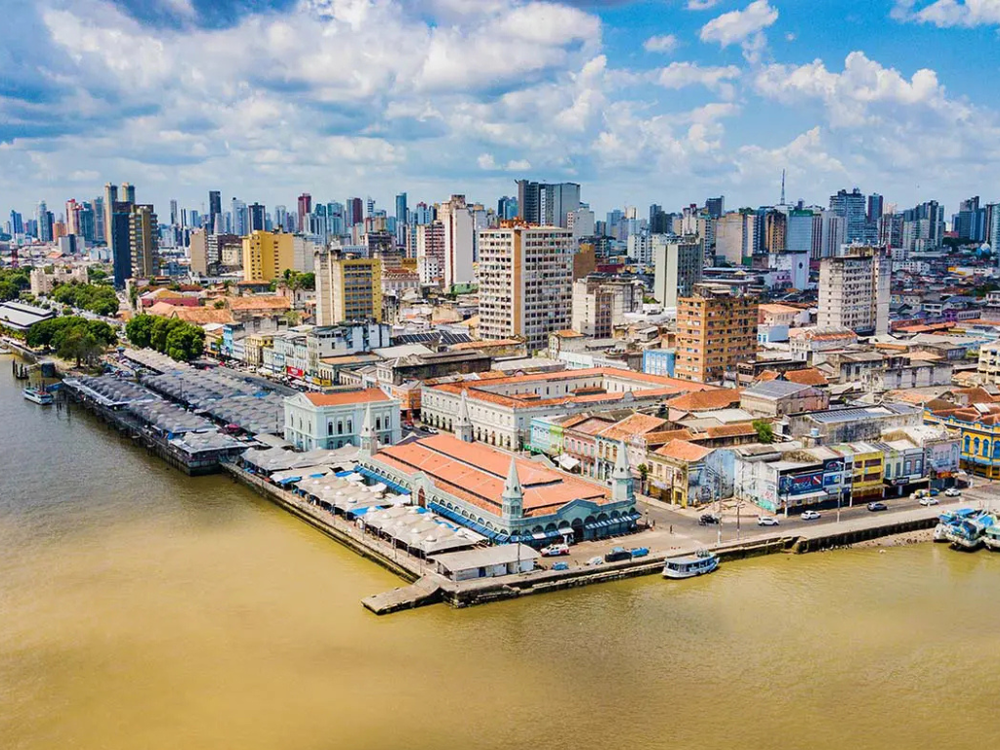

O Pará é um dos estados mais importantes da região Norte do Brasil, conhecido por sua grande riqueza natural, cultural e econômica. Sua capital, Belém, destaca-se pela forte influência amazônica, pela culinária típica e por eventos tradicionais como o Círio de Nazaré, uma das maiores celebrações religiosas do país. O estado possui extensa área coberta pela Floresta Amazônica e é cortado por importantes rios, como o Rio Amazonas. A economia paraense é baseada na mineração, no extrativismo, na agropecuária e no comércio, além de apresentar grande diversidade cultural influenciada por povos indígenas, africanos e ribeirinhos.

Voltar